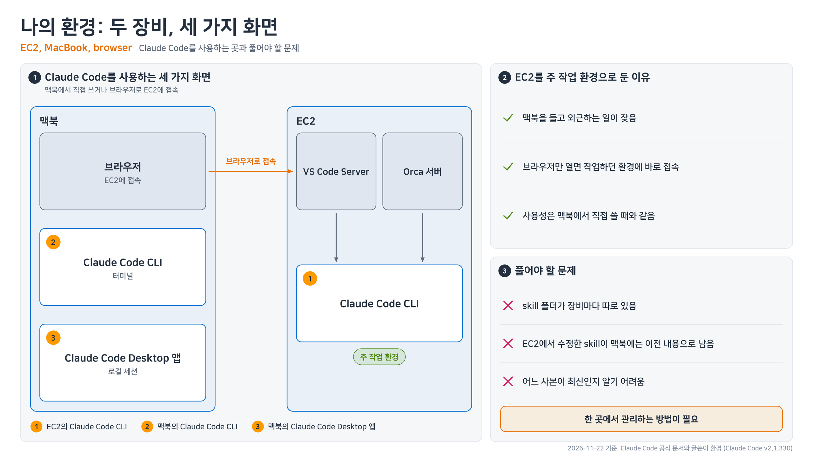
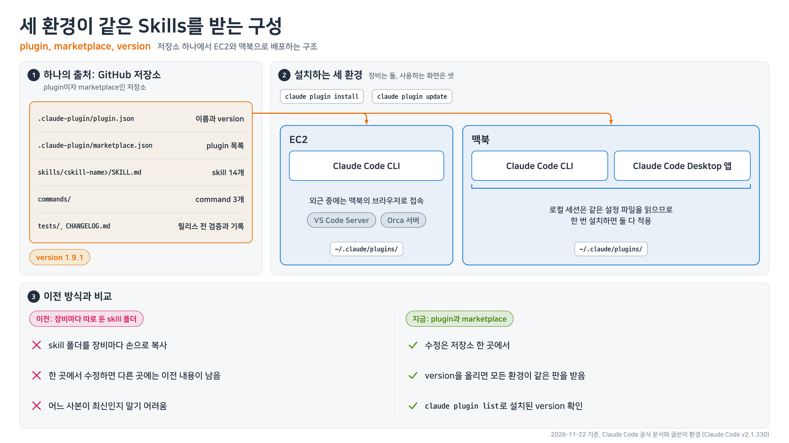
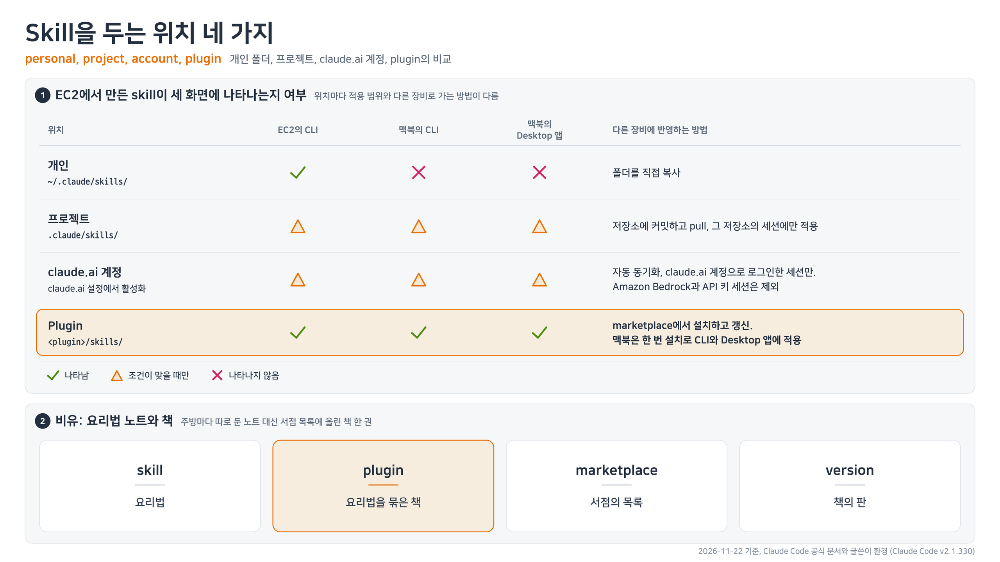
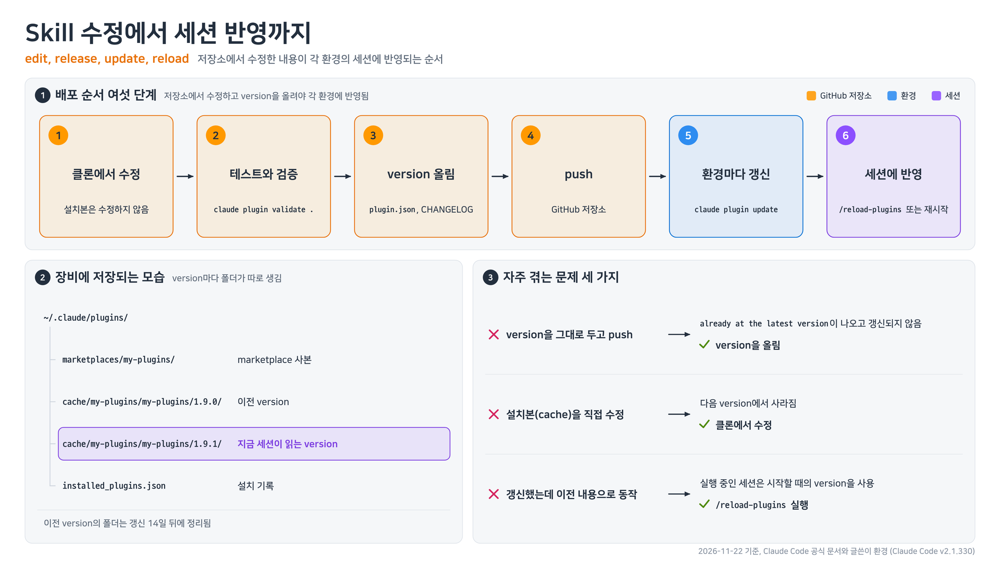
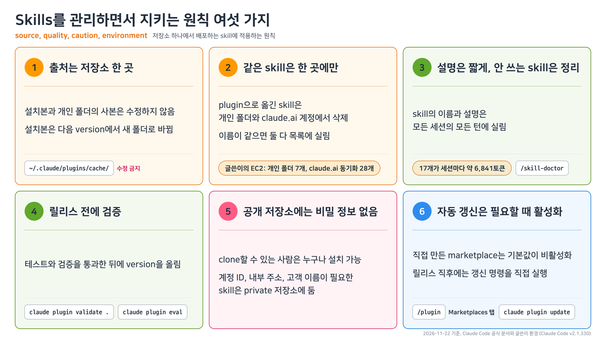
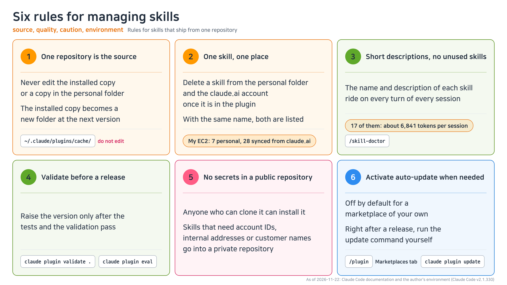

Claude Code Skills 관리 모범사례Best practices for managing Claude Code skills
EC2의 Claude Code CLI, 맥북의 CLI와 Desktop 앱에서 같은 skill을 사용하려고 직접 만든 skill을 plugin 하나로 묶어 GitHub marketplace로 관리하는 방법을 정리했습니다. 수정은 저장소 한 곳에서 하고 version을 올리면 장비마다 명령 한 줄로 같은 판을 받습니다. 이 방식을 Claude Code 공식 문서와 대조해 보니 plugin의 용도, marketplace 게시 방법, version 관리 방법이 문서의 안내와 일치했습니다.To use the same skills in the Claude Code CLI on EC2 and in the CLI and the desktop app on a MacBook, I bundle the skills I wrote into one plugin and use a GitHub repository as the marketplace. Edits happen in that one repository, and once the version is raised each machine gets the same release with one command. Checked against the Claude Code documentation, the use of a plugin, the way the marketplace is published and the way versions are handled all match what the documentation says.
- 구성: 장비는 둘이고 사용하는 화면은 셋입니다. 맥북은 한 번 설치하면 CLI와 Desktop 앱의 로컬 세션에 함께 적용됩니다.Setup: two machines and three surfaces. On the MacBook one install serves both the CLI and the desktop app's local sessions.
- 배포: 저장소에서 수정하고
plugin.json의 version을 올려 push한 뒤 장비마다claude plugin update를 실행합니다.Release: edit in the repository, raise the version inplugin.json, push, then runclaude plugin updateon each machine. - 주의: version을 올리지 않으면 갱신되지 않고 실행 중인 세션은
/reload-plugins전까지 이전 version을 사용합니다.Watch out: nothing updates unless the version changes, and a running session keeps the previous version until/reload-plugins. - 비용: 제 plugin의 skill과 command 17개는 세션마다 약 6,841토큰을 차지하므로 설명을 짧게 쓰고 사용하지 않는 skill을 정리합니다.Cost: the 17 skills and commands of my plugin take about 6,841 tokens per session, so descriptions stay short and unused skills go.
- 문서 대조: 여섯 항목 가운데 다섯이 공식 문서의 안내와 일치했고 한 사람이 여러 장비에 설치하는 용도는 문서에 따로 언급되지 않았습니다.Documentation check: five of six items match the documentation, and the documentation does not mention one person installing on several machines.
나의 환경
저는 Claude Code를 EC2와 맥북 두 장비에서 세 가지 방식으로 사용합니다. 직접 만든 skill을 장비마다 따로 두면 한 곳에서 수정한 내용이 다른 곳에 반영되지 않으므로 한 곳에서 관리하는 방법이 필요했습니다.

세 가지는 EC2의 Claude Code CLI, 맥북의 Claude Code CLI, 맥북의 Claude Code Desktop 앱입니다. 맥북을 들고 외근하는 일이 잦아 주 작업 환경은 EC2에 두었습니다. EC2에는 VS Code Server를 띄워 두거나 Orca를 서버로 다시 패키징해 띄워 두고 브라우저로 접속합니다. Orca는 여러 코딩 에이전트를 병렬로 실행하는 오픈 소스 앱입니다. 외근 중에도 브라우저만 열면 작업하던 환경에 바로 접속하고 사용성도 맥북에서 직접 쓸 때와 같습니다.
| 환경 | 사용하는 방법 | plugin 설치 |
|---|---|---|
| EC2의 Claude Code CLI | 브라우저로 VS Code Server나 Orca 서버에 접속해 실행 | EC2에서 한 번 |
| 맥북의 Claude Code CLI | 맥북의 터미널에서 실행 | 맥북에서 한 번 |
| 맥북의 Claude Code Desktop 앱 | 앱의 로컬 세션에서 실행 | CLI와 같은 설정 파일을 읽으므로 따로 설치하지 않음 |
표 1. Claude Code를 사용하는 세 환경
이 환경에서 풀어야 할 문제는 skill입니다. skill 폴더가 장비마다 따로 있으면 EC2에서 수정한 skill이 맥북에는 이전 내용으로 남고 어느 사본이 최신인지 알기 어려워집니다.
01
Plugin과 Marketplace로 묶은 구성
직접 만든 skill을 plugin 하나로 묶어 GitHub 저장소에 두고 그 저장소를 marketplace로 등록했습니다. 그림 2가 완성된 구성입니다.

장비는 둘이고 사용하는 화면은 셋입니다. 공식 문서에 따르면 한 컴퓨터의 터미널, Desktop 앱의 로컬 세션, VS Code 확장은 같은 설정 파일을 읽습니다. 그래서 맥북에서는 한 번 설치하면 CLI와 Desktop 앱에 함께 적용됩니다. 설치와 갱신은 장비마다 명령 한 줄입니다.
02
Skill이 놓이는 위치와 Plugin을 고른 이유
skill은 저장하는 위치에 따라 적용되는 범위가 달라집니다. 한 사람이 여러 장비에서 쓸 때 고를 수 있는 위치는 네 가지입니다. 그림 3은 EC2에서 만든 skill이 위치마다 세 화면에 나타나는지를 보여 줍니다.

개인 폴더(~/.claude/skills/)의 skill은 그 장비에서만 보이고 프로젝트 폴더(.claude/skills/)의 skill은 그 저장소의 세션에서만 보입니다. claude.ai 계정의 skill은 자동으로 동기화되지만 Amazon Bedrock이나 API 키로 인증한 세션에는 내려오지 않습니다. plugin은 설치한 모든 곳에 같은 내용으로 나타납니다.
plugin을 고른 이유는 세 가지입니다.
- 장비가 달라도 설치와 갱신 명령이 같습니다. 인증 방식이 달라도 동작합니다.
- version이 있어 어느 장비가 어느 판을 쓰는지
claude plugin list로 확인됩니다. - Git 저장소이므로 변경 이력이 남고 테스트를 붙일 수 있으며 이전 판으로 되돌릴 수 있습니다.
요리법 노트에 비유하면 이해하기 쉽습니다. 집과 사무실의 주방에 손으로 적은 노트를 따로 두면 한쪽에서 수정한 요리법이 다른 쪽에는 옛 내용으로 남습니다. 요리법을 책 한 권으로 묶어 서점의 목록에 올려 두면 판이 바뀔 때마다 두 주방이 같은 판을 받아 옵니다. skill이 요리법, plugin이 책, marketplace가 서점의 목록, version이 책의 판입니다. 주방에 꽂힌 책에 직접 적은 메모는 새 판을 받으면 사라지므로 수정은 원고에서 합니다.
비유와 다른 점이 하나 있습니다. 새 판을 받아도 이미 실행 중인 세션은 다시 불러오기 전까지 이전 판을 계속 사용합니다.
03
저장소 하나를 Plugin이자 Marketplace로 만들기
plugin은 .claude-plugin/plugin.json이 있는 폴더이고 marketplace는 .claude-plugin/marketplace.json이 있는 저장소입니다. 두 파일을 한 저장소에 두면 저장소 하나가 plugin이자 marketplace가 됩니다.
my-plugins/
.claude-plugin/
plugin.json
marketplace.json
skills/
techblogs/SKILL.md
kor-deslop/SKILL.md
...
commands/
tests/
CHANGELOG.mdplugin.json에는 이름과 version을 적습니다. 이름은 설치한 사람이 이름@marketplace로 계속 사용하므로 바꾸지 않습니다.
{
"name": "my-plugins",
"version": "1.9.1",
"description": "...",
"repository": "https://github.com/whchoi98/my-plugins"
}marketplace.json에는 plugin 목록을 적습니다. source의 ./는 plugin이 저장소 루트에 있다는 뜻입니다.
{
"name": "my-plugins",
"owner": { "name": "WooHyung Choi" },
"plugins": [
{ "name": "my-plugins", "source": "./" }
]
}plugin 안의 skill은 /my-plugins:techblogs처럼 plugin 이름이 앞에 붙으므로 다른 위치에 있는 같은 이름의 skill과 충돌하지 않습니다. push하기 전에 구조를 검증합니다. 제 저장소는 아이콘이 없다는 경고 하나와 함께 통과했습니다.
$ claude plugin validate .
...
✔ Validation passed with warnings04
두 장비에 설치하기
EC2와 맥북에서 한 번씩 실행합니다. marketplace를 추가한 뒤 plugin을 설치합니다.
claude plugin marketplace add whchoi98/my-plugins
claude plugin install my-plugins@my-pluginsv2.1.292 이상에서는 claude plugin install my-plugins --marketplace whchoi98/my-plugins 한 줄로 두 단계를 함께 실행합니다. 설치 범위는 모든 프로젝트에서 사용하도록 user로 둡니다. 설치된 version은 다음 명령으로 확인합니다.
$ claude plugin list
❯ my-plugins@my-plugins
Version: 1.9.1
Scope: user
Status: ✔ enabled맥북에서는 터미널에서 설치한 plugin이 Desktop 앱의 로컬 세션에도 적용됩니다. Desktop 앱에서 직접 설치하려면 입력창 옆의 + 버튼에서 plugin 메뉴를 엽니다. 클라우드 세션은 로컬에 설치한 plugin을 불러오지 않습니다.
05
수정하고 배포하는 순서
skill을 수정해 각 환경에 반영하기까지 여섯 단계를 거칩니다.

- 저장소의 클론에서 skill을 수정합니다. 설치본이 있는
~/.claude/plugins/cache/는 수정하지 않습니다. - 테스트와
claude plugin validate .를 실행합니다. plugin.json의version을 올리고 CHANGELOG에 바뀐 내용을 적습니다.- push합니다.
- 장비마다 갱신 명령을 실행합니다.
- 실행 중인 세션에는
/reload-plugins로 반영합니다. 실행하지 않아도 다음에 시작하는 세션부터 반영됩니다.
claude plugin update my-plugins@my-pluginsversion을 올리지 않고 push하면 갱신 명령이 is already at the latest version을 출력하고 설치본은 그대로입니다. Claude Code가 plugin.json의 version으로 갱신 여부를 판단하기 때문입니다. version을 아예 적지 않으면 커밋 SHA가 version이 되어 커밋마다 갱신됩니다. 저는 판을 구분하려고 version을 직접 올립니다.
설치본은 version마다 cache/<marketplace>/<plugin>/<version>/ 폴더에 따로 저장됩니다. 실행 중인 세션이 이전 version을 계속 읽을 수 있도록 이전 폴더는 갱신 14일 뒤에 정리됩니다.
06
관리하면서 지키는 원칙 여섯 가지
그림 5는 이 방식을 운영하면서 지키는 원칙 여섯 가지입니다.

- 출처는 저장소 한 곳입니다. 설치본과 개인 폴더의 사본은 수정하지 않습니다. 설치본은 다음 version에서 새 폴더로 바뀌므로 그 안에서 수정한 내용은 사라집니다.
- 같은 skill을 여러 위치에 두지 않습니다. plugin으로 옮긴 skill은
~/.claude/skills/와 claude.ai 계정에서 지웁니다. 제 EC2에는 개인 폴더에 7개, claude.ai 동기화로 28개의 skill이 따로 있었고 plugin과 이름이 같은 skill도 남아 있었습니다. 이름이 같으면 둘 다 목록에 실려 어느 쪽이 호출되는지 헷갈립니다. - 설명은 짧게 쓰고 사용하지 않는 skill은 정리합니다. 활성화한 plugin의 skill 이름과 설명은 모든 세션의 모든 턴에 실립니다. 제 plugin은 skill과 command 17개가 세션마다 약 6,841토큰을 차지합니다.
claude plugin details my-plugins가 이 값을 보여 주고/skill-doctor가 skill별 비용과 사용 횟수를 보여 줍니다. 비용 구조는 비용 절감 Tip 글에 정리했습니다. - 릴리스 전에 검증합니다. 저장소의 테스트와
claude plugin validate를 통과한 뒤에 version을 올립니다. skill의 동작까지 확인하려면claude plugin eval로 평가 사례를 만듭니다. - 공개 저장소에는 비밀 정보를 넣지 않습니다. 저장소를 clone할 수 있는 사람은 누구나 설치할 수 있습니다. 계정 ID, 내부 주소, 고객 이름이 필요한 skill은 private 저장소에 둡니다. 저장소가 private이면 marketplace도 private입니다.
- 자동 갱신은 필요할 때 활성화합니다. 직접 만든 marketplace는 자동 갱신의 기본값이 비활성화입니다.
/plugin의 Marketplaces 탭에서 활성화하면 세션을 시작한 뒤 새 version을 받아 옵니다. 릴리스 직후에 바로 사용하려면 갱신 명령을 직접 실행합니다.
07
Anthropic 공식 문서와의 대조
이 방식이 Claude Code 공식 문서의 안내와 맞는지 항목별로 확인했습니다.
| 제 방식 | 공식 문서의 설명 | 판정 |
|---|---|---|
| 여러 skill을 plugin 하나로 묶음 | 같은 구성을 여러 저장소에서 다시 쓰거나 팀원에게 주거나 version을 붙여 배포하려면 plugin으로 만들라고 안내 | 일치 |
| GitHub 저장소를 marketplace로 사용 | 저장소에 marketplace.json을 두면 게시가 끝나고 plugin의 저장소에 함께 둘 수 있다고 설명 | 일치 |
| 릴리스마다 version을 올림 | 릴리스마다 version을 올리는 방법과 아예 적지 않는 방법 두 가지를 제시 | 일치 |
push 전에 claude plugin validate 실행 | 릴리스 준비 단계로 안내하고 CI에서는 --strict를 붙이라고 설명 | 일치 |
| 맥북에서 한 번 설치해 CLI와 Desktop 앱에 적용 | 한 컴퓨터의 터미널, Desktop 앱의 로컬 세션, VS Code 확장이 같은 설정 파일을 읽는다고 설명 | 일치 |
| 한 사람이 여러 장비에 같은 plugin을 설치 | 여러 저장소와 팀 공유를 용도로 설명하고 개인의 여러 장비는 따로 언급하지 않음 | 같은 구조를 적용 |
표 2. 제 방식과 Claude Code 공식 문서의 대조. 2026년 11월 22일 확인
문서가 알려 주는 한계도 있습니다. 클라우드 세션과 Cowork는 로컬에 설치한 plugin을 불러오지 않습니다. 이 환경에서는 claude.ai 계정에 활성화한 skill이나 저장소의 .claude/skills/를 사용합니다.
08
비활성화와 제거, 다음에 덧붙일 것
plugin을 잠시 사용하지 않으려면 비활성화하고 완전히 지우려면 제거합니다. 저장소는 그대로 남으므로 다시 설치하면 같은 version으로 돌아옵니다.
claude plugin disable my-plugins@my-plugins
claude plugin uninstall my-plugins@my-plugins다음에 덧붙일 것은 두 가지입니다. skill이 늘어나면 claude plugin eval로 skill마다 평가 사례를 만들어 수정할 때마다 실행합니다. 장비가 늘어나면 marketplace의 자동 갱신을 활성화해 갱신 명령을 장비마다 실행하는 일을 줄입니다.
My environment
I use Claude Code on two machines, EC2 and a MacBook, in three ways. With the skills I wrote kept separately on each machine, an edit in one place did not reach the others, so I needed one place to manage them.
![A figure in three parts. On the left, the three surfaces where I use Claude Code: the MacBook holds a browser, the Claude Code CLI and the Claude Code Desktop app, and EC2 holds VS Code Server and the Orca server with the Claude Code CLI below them, reached from the MacBook's browser. At the upper right, why EC2 is my main workspace: I often work away from the office, a browser takes me straight back to my work, and it is as easy to use as the MacBook. At the lower right, the problem to solve: each machine has its own skill folder, so a skill edited on EC2 stays old on the MacBook](claude-code-skills-plugin-marketplace-assets/fig01-my-environment-en.png)
The three are the Claude Code CLI on EC2, the Claude Code CLI on the MacBook, and the Claude Code Desktop app on the MacBook. I often work away from the office with the MacBook, so my main working environment is on EC2. On EC2 I keep VS Code Server running, or Orca repackaged to run as a server, and connect with a browser. Orca is an open-source app that runs several coding agents in parallel. Away from the office, opening a browser takes me straight back to the environment I was working in, and it is as easy to use as working on the MacBook itself.
| Environment | How I use it | Plugin install |
|---|---|---|
| Claude Code CLI on EC2 | Run from a browser connected to VS Code Server or the Orca server | Once on EC2 |
| Claude Code CLI on the MacBook | Run in the MacBook's terminal | Once on the MacBook |
| Claude Code Desktop app on the MacBook | Run in the app's local sessions | No separate install: it reads the same settings files as the CLI |
Table 1. The three environments where I use Claude Code
The problem to solve in this environment is the skills. When each machine has its own skill folder, a skill edited on EC2 stays old on the MacBook, and it gets hard to tell which copy is the latest.
01
The setup: one plugin and one marketplace
I put the skills I wrote into one plugin in a GitHub repository and registered that repository as a marketplace. Figure 2 shows the finished setup.
![A figure in three parts. On the left, a GitHub repository that is both a plugin and a marketplace, holding plugin.json, marketplace.json, a skills folder, a commands folder, tests and a CHANGELOG, at version 1.9.1. On the right, the environments that install from it: the Claude Code CLI on EC2, and the Claude Code CLI and the Claude Code Desktop app on the MacBook. EC2 is used from a browser connected to VS Code Server or the Orca server, and on the MacBook one install serves both the CLI and the desktop app. At the bottom, the earlier way of copying skill folders to each machine by hand compared with the current way](claude-code-skills-plugin-marketplace-assets/fig02-three-environments-en.png)
There are two machines and three surfaces. According to the documentation, the terminal, the desktop app's local sessions and the VS Code extension on one computer read the same settings files. So on the MacBook one install serves both the CLI and the desktop app. Installing and updating takes one command per machine.
02
Where a skill can live, and why I chose a plugin
Where you save a skill decides which sessions load it. One person working on several machines has four places to choose from. Figure 3 shows, for each place, whether a skill made on EC2 appears on the three surfaces.
![A figure in two parts. At the top, a grid with the four places to keep a skill as rows and the CLI on EC2, the CLI on the MacBook and the desktop app on the MacBook as columns, marking whether a skill made on EC2 appears on each surface. A personal skill appears on EC2 only, a project skill only in sessions of that repository where it was pulled, a claude.ai account skill only in sessions signed in with claude.ai, and a plugin skill on all three surfaces where the plugin is installed. At the bottom, the picture: a skill is a recipe, the plugin is the book of recipes, the marketplace is the bookshop's catalog and the version is the edition](claude-code-skills-plugin-marketplace-assets/fig03-skill-locations-en.png)
A skill in the personal folder (~/.claude/skills/) is visible on that machine only, and a skill in the project folder (.claude/skills/) only in sessions of that repository. A skill on the claude.ai account syncs automatically, but not to sessions that authenticate through Amazon Bedrock or an API key. A plugin appears with the same content everywhere it is installed.
I chose a plugin for three reasons.
- The install and update commands are the same on every machine, whatever the sign-in method.
- It has a version, so
claude plugin listshows which release each machine runs. - It is a Git repository, so it keeps a history, can carry tests and can go back to an earlier release.
A recipe notebook makes this easy to picture. If you keep a handwritten notebook in the kitchen at home and another at the office, a recipe corrected in one stays old in the other. Bind the recipes into one book and list it in a bookshop's catalog, and both kitchens get the same edition whenever a new one comes out. A skill is a recipe, the plugin is the book, the marketplace is the bookshop's catalog, and the version is the edition. A note written into the copy on the kitchen shelf is gone when the new edition arrives, so corrections go into the manuscript.
The picture differs from reality in one way. Even after the new edition arrives, a session that is already running keeps using the old one until it reloads.
03
One repository as both the plugin and the marketplace
A plugin is a folder with .claude-plugin/plugin.json, and a marketplace is a repository with .claude-plugin/marketplace.json. With both files in one repository, that repository is the plugin and the marketplace at once.
my-plugins/
.claude-plugin/
plugin.json
marketplace.json
skills/
techblogs/SKILL.md
kor-deslop/SKILL.md
...
commands/
tests/
CHANGELOG.mdplugin.json holds the name and the version. People who install the plugin keep using the name as name@marketplace, so do not change it.
{
"name": "my-plugins",
"version": "1.9.1",
"description": "...",
"repository": "https://github.com/whchoi98/my-plugins"
}marketplace.json lists the plugins. A source of ./ means the plugin is at the root of the repository.
{
"name": "my-plugins",
"owner": { "name": "WooHyung Choi" },
"plugins": [
{ "name": "my-plugins", "source": "./" }
]
}A skill inside a plugin carries the plugin name in front, as in /my-plugins:techblogs, so it does not collide with a skill of the same name in another location. Validate the structure before you push. My repository passed with one warning, about a missing icon.
$ claude plugin validate .
...
✔ Validation passed with warnings04
Installing on the two machines
Run this once on EC2 and once on the MacBook. Add the marketplace, then install the plugin.
claude plugin marketplace add whchoi98/my-plugins
claude plugin install my-plugins@my-pluginsOn v2.1.292 or later, the single line claude plugin install my-plugins --marketplace whchoi98/my-plugins does both steps. I install at user scope, so that every project gets the plugin. This command shows the installed version.
$ claude plugin list
❯ my-plugins@my-plugins
Version: 1.9.1
Scope: user
Status: ✔ enabledOn the MacBook, a plugin installed in the terminal also applies to the desktop app's local sessions. To install from the desktop app itself, open the plugin menu from the + button next to the prompt box. Cloud sessions do not load plugins installed locally.
05
The order of an edit and a release
An edit to a skill reaches every environment in six steps.
![A figure in three parts. At the top, the six steps of a release: edit in the clone, test and validate, bump the version, push, update in each environment, apply to the session. At the lower left, what is stored on each machine: under the plugins folder, a copy of the marketplace, a cache folder for each version and the install record. At the lower right, three common problems, each with its fix: pushing without changing the version, editing the installed copy, and old content still running after an update](claude-code-skills-plugin-marketplace-assets/fig04-release-flow-en.png)
- Edit the skill in a clone of the repository. Do not edit
~/.claude/plugins/cache/, where the installed copy is. - Run the tests and
claude plugin validate .. - Raise
versioninplugin.jsonand write what changed in the CHANGELOG. - Push.
- Run the update command on each machine.
- Apply it to a running session with
/reload-plugins. Without that, it applies from the next session you start.
claude plugin update my-plugins@my-pluginsIf you push without raising the version, the update command prints is already at the latest version and the installed copy stays as it was. Claude Code decides whether to update from version in plugin.json. If you leave version out altogether, the commit SHA becomes the version and every commit is an update. I raise the version by hand so that releases can be told apart.
The installed copy is stored per version, in cache/<marketplace>/<plugin>/<version>/. The previous folder is removed 14 days after the update, so that a running session can keep reading the previous version.
06
Six rules I keep
Figure 5 shows the six rules I keep while running this setup.

- One repository is the source. I do not edit the installed copy or a copy in the personal folder. The installed copy becomes a new folder at the next version, so anything edited inside it is lost.
- The same skill does not live in several places. Once a skill has moved into the plugin, I delete it from
~/.claude/skills/and from the claude.ai account. On my EC2 there were 7 skills in the personal folder and 28 synced from claude.ai, and one had the same name as a skill in the plugin. With the same name in two places, both are listed and it is hard to tell which one gets invoked. - Descriptions are short, and unused skills go. The name and description of every skill in an enabled plugin ride on every turn of every session. In my plugin, 17 skills and commands take about 6,841 tokens per session.
claude plugin details my-pluginsshows that number, and/skill-doctorshows the cost and the use count of each skill. The cost structure is set out in the post on cost tips. - Validate before a release. I raise the version only after the repository's tests and
claude plugin validatepass. To check how a skill behaves as well, write eval cases forclaude plugin eval. - No secrets in a public repository. Anyone who can clone the repository can install from it. Skills that need account IDs, internal addresses or customer names go into a private repository. If the repository is private, the marketplace is private too.
- Auto-update is activated when needed. Auto-update is off by default for a marketplace you made yourself. Activate it on the Marketplaces tab of
/pluginand new versions arrive after a session starts. To use a release right away, run the update command yourself.
07
Checked against the Anthropic documentation
I checked item by item whether this way of working matches what the Claude Code documentation says.
| What I do | What the documentation says | Verdict |
|---|---|---|
| Bundle several skills into one plugin | Make a plugin to reuse the same setup across repositories, to give it to teammates or to publish versioned releases | Matches |
| Use a GitHub repository as the marketplace | Once marketplace.json is in the repository the plugin is published, and the file can sit in the plugin's own repository | Matches |
| Raise the version on every release | Offers two ways: raise version on every release, or leave it out | Matches |
Run claude plugin validate before pushing | Listed as a step of preparing a release, with --strict in CI | Matches |
| Install once on the MacBook for the CLI and the desktop app | The terminal, the desktop app's local sessions and the VS Code extension on one computer read the same settings files | Matches |
| One person installs the same plugin on several machines | Names several repositories and sharing with a team as the uses, and does not mention one person's several machines | Same structure applied |
Table 2. My way of working checked against the Claude Code documentation, November 22, 2026
The documentation also states a limit. Cloud sessions and Cowork do not load plugins installed locally. In those environments, use the skills enabled for your claude.ai account or the repository's .claude/skills/.
08
Disabling, removing, and what to add next
Disable the plugin to stop using it for a while, and uninstall it to remove it. The repository stays, so installing again brings back the same version.
claude plugin disable my-plugins@my-plugins
claude plugin uninstall my-plugins@my-pluginsThere are two things to add next. As the skills grow in number, write eval cases for each skill with claude plugin eval and run them on every change. As the machines grow in number, activate auto-update for the marketplace so that the update command does not have to be run on each one.
참고 자료References
| No. | 출처Source | 종류Kind | 확인한 날Checked |
|---|---|---|---|
| 1 | Extend Claude with skills | 공식 문서Claude Code docs | 2026-11-22 |
| 2 | Plugins overview | 공식 문서Claude Code docs | 2026-11-22 |
| 3 | Install and manage plugins | 공식 문서Claude Code docs | 2026-11-22 |
| 4 | Create a Claude Code plugin | 공식 문서Claude Code docs | 2026-11-22 |
| 5 | Publish and distribute a plugin | 공식 문서Claude Code docs | 2026-11-22 |
| 6 | Host and maintain a marketplace | 공식 문서Claude Code docs | 2026-11-22 |
| 7 | Plugin loading reference | 공식 문서Claude Code docs | 2026-11-22 |
| 8 | Plugin commands reference | 공식 문서Claude Code docs | 2026-11-22 |
| 9 | Extend Claude Code | 공식 문서Claude Code docs | 2026-11-22 |
| 10 | Desktop application | 공식 문서Claude Code docs | 2026-11-22 |
| 11 | stablyai/orca | GitHub 저장소GitHub repository | 2026-11-22 |